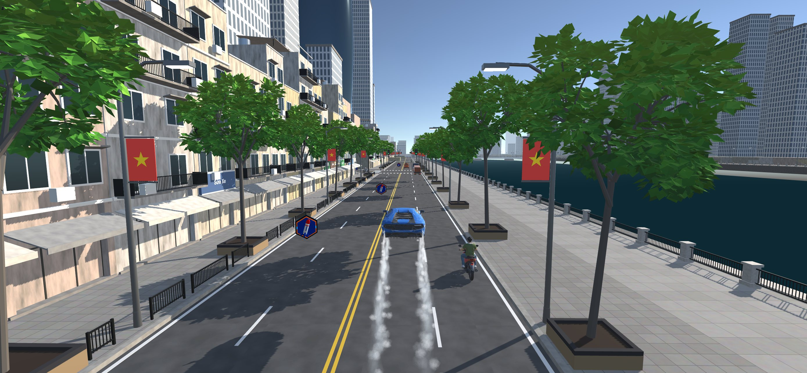
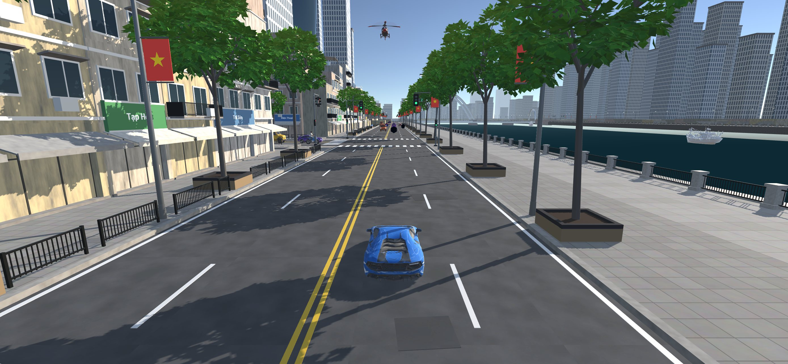
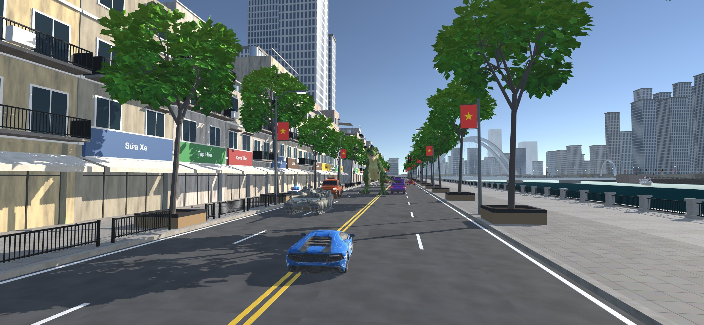

Xoay ngang để chơi
Xoay điện thoại hoặc máy tính bảng sang ngang để vào phố.
BẢN ĐỒ MỞ · SÀI GÒN
Phố quen.
Chuyến đi mới.
Cầm lái xe đua xanh, chạy tự do khắp phố ven sông, chợ và cầu. Né CSGT, khủng long, xe tăng và trực thăng, bật nhảy, bắn tên lửa và thử phá kỷ lục quãng đường.
Chơi miễn phí · Máy tính & điện thoại
← ↑ ↓ → / WASDLái xeJNhảyFTên lửaSPACEPhanh tayPTạm dừng
Xoay ngang để chơi. Giữ nút ← / → bên trái để lái, giữ Ga / Lùi / Stop bên phải; Nhảy và Tên lửa ở hàng trên.
MỚI Bản cập nhật — · 20/11/2026
- Sửa lỗi Safari trên iPhone/iPad báo «Đã có sự cố xảy ra liên tục»: phản chiếu mặt sông không còn làm game tốn thêm bộ nhớ.
- Trả lại độ phân giải ảnh đầy đủ trên điện thoại.
- Tàu trên sông chạy nhẹ hơn, không còn làm bộ nhớ tăng dần khi chơi lâu.
- Bản dựng mới hoàn toàn (build sạch từ đầu).


